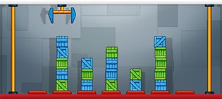
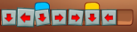

Após a aprovação da primeira versão do jogo Cargo-Bot feita por você, os responsáveis pela TwoLivesLeft lhe desafiaram a adicionar mais funcionalidades do jogo original. Os comandos básicos, a detecção de um acidente e o funcionamento do braço mecânico continuam como descritos no Laboratório 04a.
Agora, ao invés de apenas um programa, ou seja, apenas uma sequência de comandos, a nova versão do Cargo-Bot poderá conter até 9 programas diferentes, que serão executados numa sequência pré-determinada. Cada programa conterá apenas comandos básicos ou condicionais (considere que um programa nunca chama outro).
Além disso, as caixas agora podem ser de três cores diferentes: azul, que será representada pela letra B (blue), verde, que será representada pela letra G (green) e amarelo, que será representada pela letra Y (yellow). Por exemplo, a configuração de caixas da imagem abaixo, supondo que o número máximo de caixas que podem ser empilhadas é 6, será representada da seguinte forma em sua versão do Cargo-Bot:

.......
.B...B.
.B.G.G.
.GBB.G.
.BGBGG.
.GBGBB.
Note que a ausência de caixas em uma posição é representada pelo caractere ponto ".". Além disso, note que o número de linhas da representação é igual ao número máximo de caixas que podem ser empilhadas.
Por fim, a nova versão do Cargo-Bot poderá utilizar condicionais para realização dos comandos básicos dos programas, conforme explicado anteriormente. Os comandos condicionais podem ser:

DLBDRRYDL*
| # | Entrada | Saída |
| 1 | 7 6 7 20 38 ....... .B...B. .B.G.G. .GBB.G. .BGBGG. .GBGBB. 21212721276167676761365232364246464256 BLBLBLBLBLBLBD* LLLLLLRD* LLLLLLRRND* LLLLLLRRRND* RRRRRRLLND* RRRRRRLD* GRGRGRGRGRGRGD* | ....... B....BG BG...BG BG...BG BG...BG BG...BG |
| 2 | 3 3 1 10 10 Y.. G.. B.. 1111111111 DARBRNL* | ..Y ..G ..B |
| 3 | 7 6 4 12 25 ....... ....... BBB.... BBB.... BBB.... BBB.... 1121212312121212412121212 DNR* BRBRBRDLLL* LLLLLR* LLLLLRR* | Um acidente ocorreu |
| 4 | 6 7 2 10 19 ...... G..... G..... G..... G..... G..... G..... 1111121111211121121 DRGDNL* NR* | ...... ...... ...... ...... ...... ...... GGGGGG |
| 5 | 7 6 3 21 25 ....... ....... ....... ..Y.... ..Y...Y ..YY..Y 2221222122212222132213221 D* NRNDALALAL* NRNDNRNDNRNDNRNDNRND* | Y...... Y...... Y...... Y...... Y...... Y...... |